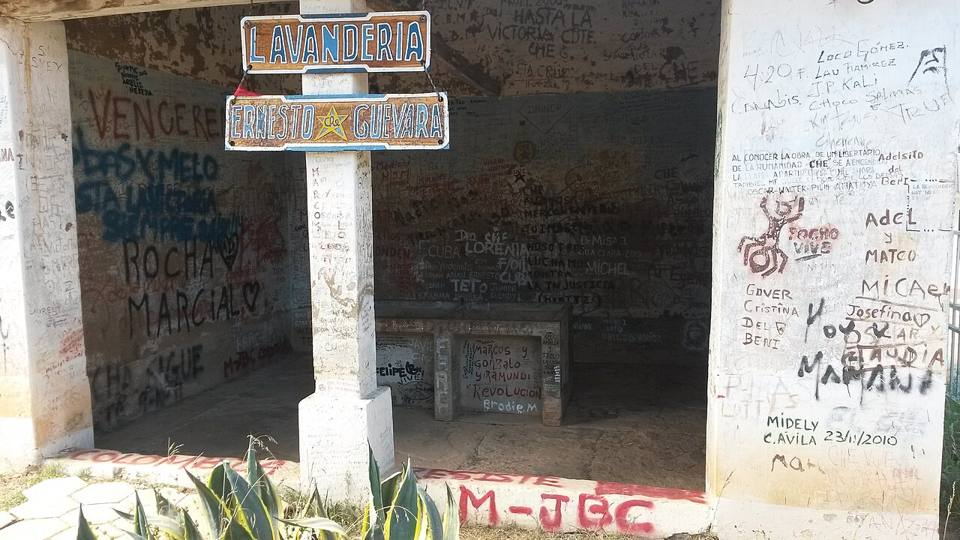

Vallegrande
Departamento de Santa Cruz · Cultura e historia

Vallegrande es un pueblo colonial tranquilo, en las montañas al oeste de Santa Cruz. Aquí se exhibió en 1967 el cuerpo de Ernesto «Che» Guevara, en la lavandería del hospital, y luego fue enterrado en secreto junto a la pista de aterrizaje, donde se encontró en 1997. Se visitan estos lugares de memoria, y el pueblo es la base para seguir a La Higuera.
2030 maltura
1 a 2 díaspara quedarse
Qué hacer
- Lavandería del hospital Señor de Malta
- Mausoleo del Che y fosa común
- Centro colonial y plaza principal
Qué comer
- MajaditoArroz cocido con charque o pollo, con huevo frito y plátano frito. El plato de Santa Cruz y el Beni.
- FricaséSopa de cerdo picante con ají amarillo y mote, famosa por curar la resaca.
- Cuñapé y pan de arrozPanecitos de queso con almidón de yuca o con arroz, calientes con un café en la mañana.
Consejo. A 3 h de Samaipata. Base para La Higuera: hay guías y taxis.
Cómo llegar a Vallegrande
La Higuera Carretera (bus, auto) · 2 a 3 h
Taxi compartido o auto con chofer desde Vallegrande.
Camino de tierra, difícil después de la lluvia.
Samaipata Carretera (bus, auto) · 3 h
Bus o excursión «Ruta del Che» desde Samaipata.
Fotos de Vallegrande

_-_Bolivia.jpg){kind=link}


Otros lugares de la región
 Santa Cruz de la SierraLa gran ciudad tropical y moderna del Oriente, con aeropuerto internacional (Viru Viru).
Santa Cruz de la SierraLa gran ciudad tropical y moderna del Oriente, con aeropuerto internacional (Viru Viru). CotocaEl santuario de la Virgen de Cotoca y sus alfareros, a 20 km de Santa Cruz.
CotocaEl santuario de la Virgen de Cotoca y sus alfareros, a 20 km de Santa Cruz. Lomas de ArenaDunas de arena blanca y lagunas al sur de Santa Cruz.
Lomas de ArenaDunas de arena blanca y lagunas al sur de Santa Cruz. EspejillosPozas naturales y cascadas en el río, cerca de Santa Cruz.
EspejillosPozas naturales y cascadas en el río, cerca de Santa Cruz. Laguna VolcánUna laguna escondida en una hoyada de cerros cubiertos de bosque.
Laguna VolcánUna laguna escondida en una hoyada de cerros cubiertos de bosque. SamaipataPueblo bohemio entre Andes y bosque: El Fuerte (UNESCO) y el parque Amboró.
SamaipataPueblo bohemio entre Andes y bosque: El Fuerte (UNESCO) y el parque Amboró. Parque Nacional AmboróBosques de nubes y helechos arborescentes, muy rico en aves.
Parque Nacional AmboróBosques de nubes y helechos arborescentes, muy rico en aves. Buena Vista (Amboró norte)Pueblito al pie del parque Amboró, del lado del bosque tropical: ríos, aves y café.
Buena Vista (Amboró norte)Pueblito al pie del parque Amboró, del lado del bosque tropical: ríos, aves y café. La HigueraEl caserío donde fue ejecutado el Che en 1967, hoy lugar de memoria.
La HigueraEl caserío donde fue ejecutado el Che en 1967, hoy lugar de memoria.